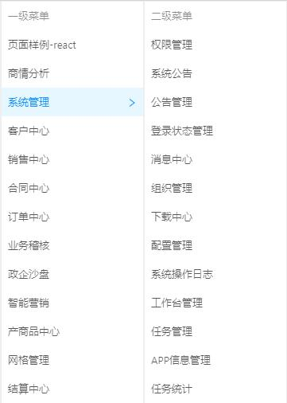

如果预设的场景
刚好覆盖你的需求，你又刚好没有代码上的历史包袱
那么一键clone你就继承了现有的13个模块以及各类前端资产
Happy!

13个功能模块
前端资产【详见2月分享】
如果预设场景满足不了你的需求
改造过程可能就会
出现意外
主要指全局设计的脉络，比如：layout控制、访问权限校验等。不包括pages下的业务模块。
因为移除不需要的业务模块，并不会影响整体的运行。
访问门户时，从输入链接回车到显示页面，期间执行了哪些逻辑？
访问权限（页面级）的校验机制是什么？
viewMode=inner如何实现的？
http://172.16.81.126:9999/portal-react/#/notice
以访问公告页为例
依次命中下列3个文件
global.js
挂载补丁，如：国际化、ie标识（用于css兼容）等
app.js
用于运行时的配置（暂时没用）
layouts/index.js
查询登录状态，总共5个状态，涉及到logged.do和status.do两个接口。
变成'LOGINED'之后，'layouts/index.js'还执行了哪些逻辑？
变成'LOG_OUT'之后，进入登录页面
三个字段
login中的另外3个字段：'needVerifyCode', 'needModifyPsw', 'forceLogin'
手动/单点登录
登录成功之后，更新login；更新sessionStorage中的user和status；路由到BasicLayout；与chekkLogin查询为登录状态时处理逻辑一致
: )